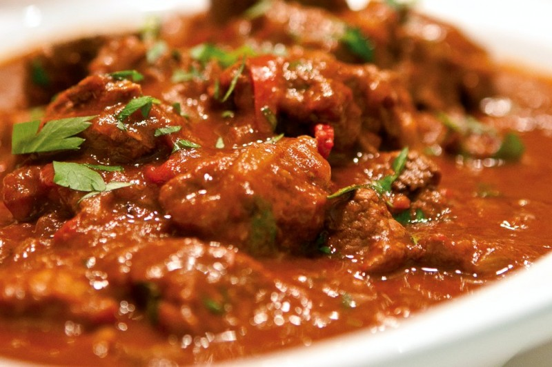

Bográcsgulyás

Source
Description
Bográcsgulyás (boh-GRACH goo-YAHSH), or goulash, is one of the classics of Hungarian
cuisine. Variations of this basic dish are popular throughout Central Europe.
Bogrács is Hungarian for "kettle", and gulyás was originally the word for "cowboy."
Today goulash refers to both the herdsmen and the stew they first cooked in their
kettles.
Source
Ingredients
- 2 tablespoons extra-virgin olive oil or bacon fat
- 2 1/2 pounds beef boneless chuck, tip or round, cut into 3/4 inch cubes
- 1 teaspoon salt, or to taste
- 1 teaspoon pepper, or to taste
- 2 large onions, roughly chopped
- 5 cloves garlic, minced
- 3 tablespoons sweet paprika
- 1 teaspoon ground caraway seeds
- 1 teaspoon dried oregano
- 3 bay leaves
- 1 teaspoon brown sugar
- 1/2 cup tomato sauce
- 2 tablespoons balsamic vinegar
- 4 cups beef broth (no salt added)
- 2 tablespoons chopped parsley, for garnish
- Heat a large deep skillet or Dutch oven over high heat then add the olive oil or
bacon fat.
- When the oil is hot, add the beef. Season with salt and pepper and sear until the
beef begins to brown. The beef will release liquid so continue searing on high
heat, and the liquid will evaporate. Alternatively you could drain all the
liquid.
- Add the onions and garlic to the skillet and cook for about 5 minutes until the
onions soften and become translucent. Lower the heat to medium-high.
- Add the paprika, caraway seeds, oregano, bay leaves and brown sugar to the
skillet. Stir everything together and cook for 30 seconds.
- Add the tomato sauce, balsamic vinegar, beef broth and stir. Bring to a boil,
then cover and cook on low for about 2 to 3 hours or until the beef is fork
tender, stirring occasionally. The liquid will reduce down as the beef cooks,
so add more water as needed.
- Taste for seasoning and adjust with salt and pepper if needed.
- Garnish with chopped parsley. Serve over noodles or mashed potatoes.